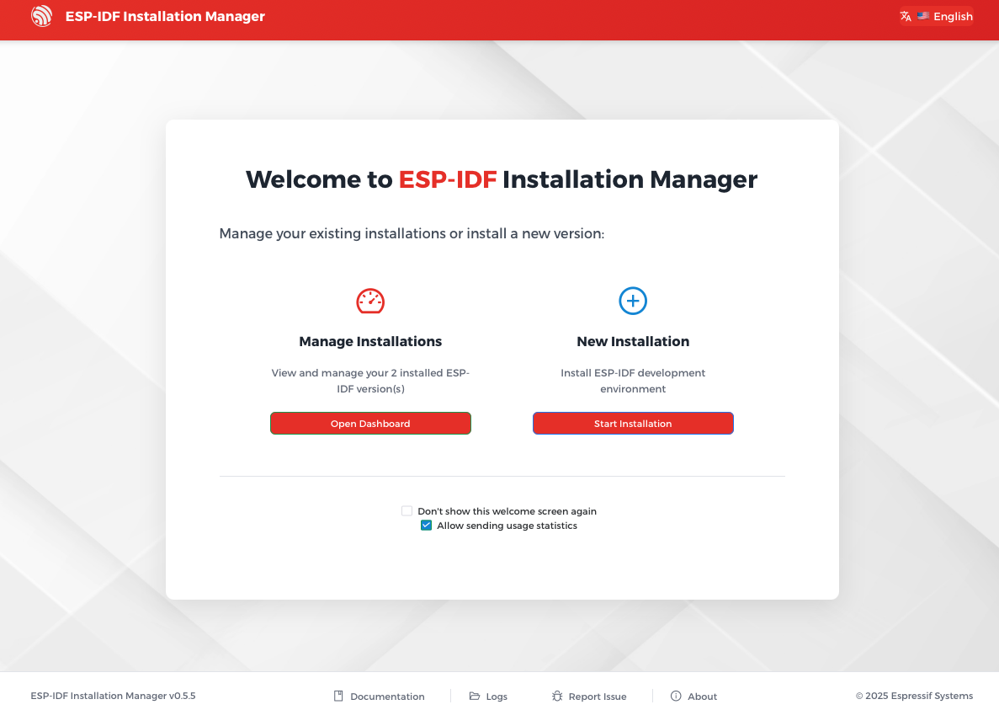
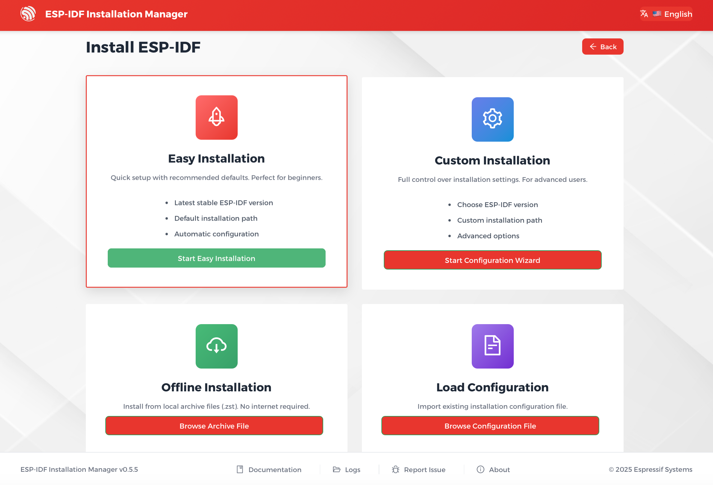
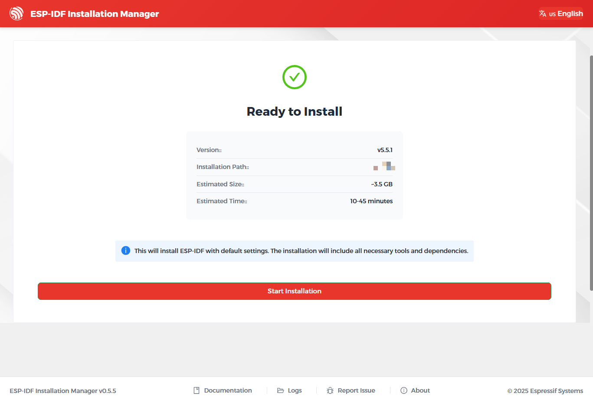
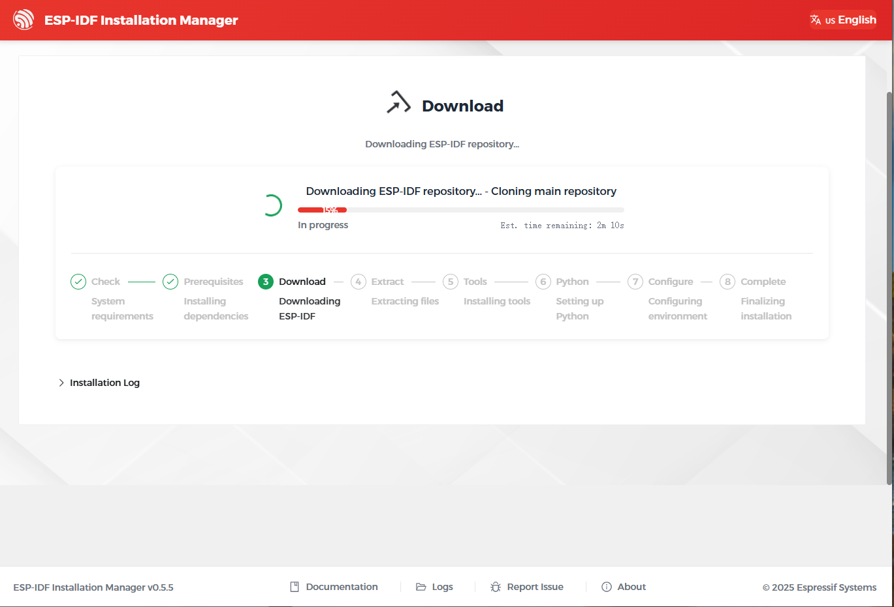
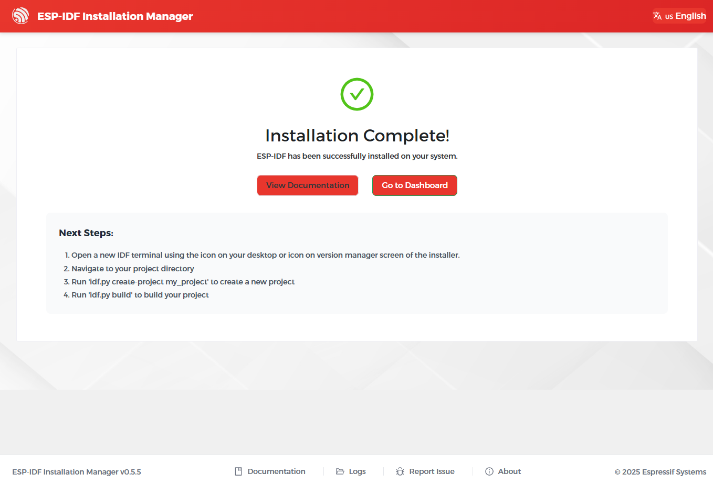

Installation of ESP-IDF and Tools on macOS
This section describes how to install ESP-IDF and its required tools on macOS using the Espressif Installation Manager (EIM).
Note
This document describes the default and recommended way to install ESP-IDF v6.0 and newer versions. ESP-IDF also supports the legacy installation method on macOS, which was the default before ESP-IDF v6.0.
Step 1: Install the Prerequisites
Install the required prerequisites via Homebrew:
brew install libgcrypt glib pixman sdl2 libslirp dfu-util cmake python
Note
Python 3.10 is the minimum supported version for ESP-IDF.
For the Python version required by the EIM, please refer to the EIM documentation.
Step 2: Install the EIM
You can install the EIM using one of the following methods:
Installing EIM with Homebrew allows you to easily keep EIM up to date with a single command.
Download the EIM
You can choose either an online or offline installer, available in Graphical User Interface (GUI) or Command Line Interface (CLI) versions.
Install the EIM with Package Manager Homebrew
Add the EIM repository to the Homebrew to make it available for installation:
brew tap espressif/eim
Then, install the EIM Graphical User Interface (GUI) or Command Line Interface (CLI) via Homebrew:
- GUI:
brew install --cask eim-gui
- CLI:
brew install eim
Step 3: Install ESP-IDF Using EIM
You can install ESP-IDF and the required tools using one of the following methods, depending on your preference:
Online Installation Using EIM GUI
Recommended for most users. Installs ESP-IDF and tools via a graphical interface with internet access.
Online Installation Using EIM CLI
Installs ESP-IDF and tools from the command line with internet access.
Online Installation Using a Loaded Configuration
Installs ESP-IDF and tools using a pre-saved configuration file copied from another PC. This method works with both the GUI and CLI, but requires internet access.
-
Installs ESP-IDF and tools from a local package, without internet access.
Online Installation Using EIM GUI
Open the ESP-IDF Installation Manager application eim.
Under New Installation click Start Installation.

EIM Start Installation
Note
If you have never installed ESP-IDF before, you will not see Manage Installations. In this case, New Installation will be the only available option.
Under Easy Installation, click Start Easy Installation to install the latest stable version of ESP-IDF with default settings.

EIM Easy Installation
If all prerequisites and path checks pass, you will see the Ready to Install page. Click Start Installation to begin the installation.

EIM Ready to Install
During the installation, you can monitor the progress directly in the interface.

EIM Installing
Once finished, the Installation Complete page will appear.

EIM Installation Complete
If the installation fails, you can:
Click
Logsat the bottom of the interface to view error details. Resolve the issues and clickTry Againto restart the installation.Alternatively, use Custom Installation.
Note
To select an ESP-IDF version or customize the installation path, use
Custom Installationinstead. See more instructions in EIM documentation > Expert Installations.To manage existing installations, refer to EIM documentation > Version Management.
Online Installation Using EIM CLI
Run the following command to install the latest stable version of ESP-IDF with default settings in non-interactive mode:
eim install
If you encounter issues running the above command, or if you want to customize the installation path, select ESP-IDF versions, or modify other options, launch the interactive installation wizard and follow the on-screen prompts:
eim wizard
If the ESP-IDF version you want to install is not available in the interactive wizard, run the following command to install any available versions. For example, to install ESP-IDF v5.4.2, run:
eim install -i v5.4.2
Once the installation is complete, you will see the following message in the terminal:
2025-11-03T15:54:12.537993300+08:00 - INFO - Wizard result: %{r}
2025-11-03T15:54:12.544174+08:00 - INFO - Successfully installed IDF
2025-11-03T15:54:12.545913900+08:00 - INFO - Now you can start using IDF tools
Note
- To see all available options, run:
eim --help
For more information about CLI usage, refer to
Online Installation Using a Loaded Configuration
When you install ESP-IDF, the installer automatically saves your setup to a configuration file named eim_config.toml in the installation directory. This configuration file can be reused on other computers to reproduce the same installation setup.
To install ESP-IDF using an existing eim_config.toml file, refer to the EIM documentation > Configuration Files.
Offline Installation
Both the GUI and CLI installers support offline installation. For instructions, refer to EIM documentation > Offline Installation.
Next Steps
You are now ready to start developing with ESP-IDF. To begin building and running your first application, continue with the Build Your First Project section.